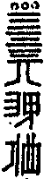

嘉興大藏經 第36冊
No.B345 蘇州竹庵衍禪師語錄 (2卷)
【清 真衍說 機如編】
第 1 卷
藕菴衍禪師語錄序
我觀世間生假二相。本無差別。未始以前。真空寂然。後乎此而有所謂文字者。其猶幻相之云也。惟幻相不礙真空。故阿難蒙佛授記。修多羅藏。復有結集。達磨東來震旦。以慧可本來一偈隨付大法。大雄之教在在圓通。固未嘗以文字為障礙也。後之學子何者為粘。何者為脫。若膠於名相。雖無字句。不能謂之真空。若義趣消融。智光迸爍。一一以印心密旨見諸字句。一字一句是皆平等大慧。一切真實。其孰謂之假設乎。千百年已來臨濟之道大行於世。十五傳而有斷橋雪巖二派。兩支並秀。如日月麗天。其教大熾。斷橋十四傳而至金明。今藕菴禪師則金明之付法嫡子也。藕菴遠承道法。介然自守。復能平心待物。使人之就之者。心境雙忘。歡喜亡厭。余媿疏慵不能數過。顧以余之正信也。持語錄屬序之。於焉諦觀反覆。知其截斷眾流。直超頓上。故能隨機示現。種種具足。如山川出雲盎盎然。盡天下之阡陌溝塍。鉤聯屈曲。不須加被而自然充滿。余得而淺量之乎。斷橋一派瀠然以孤。若得於上首門中力為擔荷。使曹溪滴水復如長江大河。流行天壤。藕菴之揚眉瞬目。一唱一新。不可已也。嘻。當機猛喝。使人人心光破裂。頓空一切。人亦於無字句處一霎參提。勿以雪泥鴻爪強作擬議。使藕菴以為盲眼漢也。可乎。
竹菴衍禪師語錄序
佛氏之書有與吾儒名同而實異者。則語錄是也。始於有宋之時。濂洛關閩諸君子講明道學之說。於是先生之所以教。弟子之所以學。及門諸子好學深思。雖單辭隻句。皆不敢廢而謹錄之。此語錄所由名也。然諸先生微言高論。互見群書。生平見於語錄者十不一二。至於佛氏之教。其傳授心法本不立文字之跡。故德山一棒。臨濟一喝。機鋒應對。相視莫逆。即語錄一書。有若川既濟而舍筏。心既伏而舍喻。可無佛者。然學佛之徒舍此別無以自見。故一經嗣法。人各為編。其敝也。至於強記公案。改竄法言。而本來悟地了無所得。此識者所為痾而語錄所以愈多而愈下也。曾子蘭坡一日以竹菴禪師語錄屬余為序。按家庭表云。竹菴系出臨濟三十二世孫。臨濟十五傳而有斷橋雪巖二派。雪巖有密雲諸嗣。其教方興而斷橋之後受國榮者屢見。又十五傳而始得金明。其派得以不墮。竹菴則嗣法金明者也。天下事艷於群趣者易為。功而勞於獨任者難為。力堯舜文武周公之道至孟軻死而不得其傳。昌黎立千百世之後為繼其絕。而有宋諸君子遂起。而有明之論學道者不得不以昌黎為孔孟之嫡子。竹公當斷橋法派接續之際而毅然以身任之。雖為之前者尚有金明而竹公亦可為特立而獨行者矣。般若金剛經云。我今得聞如是經典。信解受持。不足為難。若當來世後五百歲。其有眾生得聞是經。信解受持。是人即為第一希有。又曰。如是人等即為荷擔如來阿耨多羅三藐三菩提。謝唐樂之千載不墜由於人弘。苟非壯志定力。能任重而道遠者疇則勝之。今竹公語錄具在。其啟聵發蒙之妙。余不得而深知。在竹公則亦若筏喻既舍。其去留可無問者。而我金明竹公中興斷橋之派於十五傳之後。為天下之有志絕學者勉之。
艾菴黃永拜題
序
粵自初祖西來。花開五葉。滹沱一派。道出常情。傳至斷橋倫祖與雪巖欽禪師。兩枝競秀。倫下龍象接踵。建法幢而稱國師者不可數計。我金明介老和尚親承車溪以來。一絲九鼎。中興斷橋法道。而竹菴大和尚妙年棄室。遍叩尊宿。靡不機契。後至鴛水。與金明有水乳之投。慣捋虎鬚。當仁不讓。遂為嫡骨親子。繼而闡法婁東。惟以本分草料。直下斷人命根。若緇若素。咸仰竹菴古佛而雲集景從。出其座下者皆墮地獅兒。足以師範人天。津梁祖道。蓋不獨為金明出氣。而且為斷橋臨濟增輝矣。余得讀師語錄。如迅雷震吼。真足啟蟄發蒙。洵為灌頂之醍醐。普潤之甘霖也。余贊歎有分。不敢蛇足。但願讀斯錄者莫以眼視口誦。致負弘慈可爾。
竹菴衍禪師語錄目次
竹菴和尚傳
師名真衍。別號藕菴。臨濟三十二世孫也。姑蘇高陽氏子。明泰昌辛酉正月十有三日。母陳氏感異夢生。陳素好佛。人即以為有夙契焉。師兒時即敏慧。每喜獨坐。稍長不入凡兒隊。好持佛母準提神咒。無虛日。或遇行客僧至。必為設饌敬禮之。年十五遂有志出家。父母不許。為憂憤。幾欲絕粒者久之。明年父母為議。娶某氏女。以父母命強就婚。旋遭母喪。又明年喪父。喪葬持服訖。因告其宗老曰。兒向喜事佛。欲皈其教久矣。父母在。此身未敢以自許也。今已矣。因以所有盡散之宗人。復厚貽其室而遣之。時年十有九矣。乃如例製頭陀服為苦行人。代諸僧募飯。祁寒暑雨弗卹也。期既滿。乃往萬峰受具足戒。偶閱圓覺經菩薩發問。今者四大各離。妄身當在何處。遂撫几長嘆曰。人生不明箇事。徒為僧相。於本分中無所益耳。於是遍參尊宿。一日聞板聲。忽然有會。諸方皆為印可。名籍籍叢林矣。後過金明介禪師。介蓋斷橋倫祖第十四世孫。能弘祖法者。與師機緣相合。有水乳之契。因以法付之。隨侍逾年。因患痰疾辭介。歸隱於太倉藕花菴。每日鐘鳴危坐。默持妙法蓮花經一卷。香再炷而持畢。蓋數十年如一日也。師為人言笑不苟。氣骨高勝。一時緇素恭敬尊仰。其少年紈褲間有排斥之者。而師夸然不屑也。手書法華付剞劂竟。復書華嚴全部。越九月即成。其脩持精進不敢自假借類。如此自脫白至此。凡歷僧臘將四十年。即吾州而論。初寓雙樹。繼主福城。今住藕花。其經營殿宇。裝塑法像。在在不遺餘力。將歸老是菴矣。故自號藕菴云。
曾同吉曰。余從父兄五典師。從父子旂同舉於鄉。有譜誼。余之知師者舊矣。今藕花菴居吾邑之城南。去余廬僅數武。每過從歡相得也。余亦厭塵俗。喜學佛。幾欲自決矣。入而見妻孥兒女子輒怦怦。若不自得者。語云。金佛不度爐。木佛不度火。師其何以度我哉。
康熙十四年乙卯長夏皈依弟子曾同吉稽首草
蘇州竹菴衍禪師語錄卷上
藕菴陞座。師云。德山棒。臨濟喝。鎮海明珠滿地潑。料簡由來辨正邪。照用臨時縱生殺。擬追尋。猶未瞥。石人袖裏三斤鐵。卓拄杖。下座。
秋日陞座。師云。秋雨滴梧桐。秋風括地掃。秋色總天然。秋蛩吟到曉。開門放日來。露出形山寶。驀豎拂子召眾云。好大哥。須趁早。堂前昨夜桂香飄。山谷晦堂非草草。珍重。下座。
示眾。舉雲門大師道。終日喫飯。不曾咬著一粒米。鎮州大王問趙州和尚。年尊有幾箇牙齒。州云。只有一箇。大王云。爭喫得物。州云。雖然一箇。下下咬著。師云。趙州下下咬著。雲門不曾咬著。且道不曾咬著底是。下下咬著底是。向者裏具隻眼始得。驀拈拄杖云。難逃獅子口。眾擬對。一齊趁散。
示眾。舉中際可遵禪師上堂云。昨夜四更起來。呵呵大笑不歇。幸然好一覺睡。霜鐘撞作兩橛。師云。可遵禪師將謂奇特舉示大眾。未免寱語不少。藕菴則不然。熟睡一覺。直到天明。抽身穿腳。紅日高升。敢問諸人。還有優劣麼。驀高聲召云。大眾。惺惺著。
彌陀佛誕。示眾。師以目旋視大眾。揮拂打○云。會麼。以拂擊香臺云。聞麼。祇如有眼皆見。有耳皆聞。還知西方教主。彌陀慈父。頭頭現寶王剎。處處轉大法輪。導利四生。垂提七趣麼。諸仁者於此見得。西方此土纖毫不隔。如獲未委。山僧不惜眉毛。更為饒舌一上。今日是彌陀慈父示現降生之日。萬象森羅。呈祥呈瑞。直得燈籠起舞。露柱頻申。乃至百千萬億無量大香水海。百千萬億無量香花幢旛雲。百千萬億無量栴檀樓閣雲。乃至盡未來際一一具如是口。如是舌。如是言詞。四時歌詠。同時演唱。亦不能慶讚慈父毛道之一也。只如山僧又作麼生慶讚。昨夜六花彌宇宙。今朝紅日照乾坤。復揮拂一下。便起。
示眾。舉慈明禪師示徒偈。黑黑黑。道道道。明明明。得得得。師云。慈明老漢與麼示徒。大似擔鹽雨裏賣。藕菴不免畫蛇添足。黑黑黑。摩醯正眼光如日。道道道。打破牢關齊失照。明明明。鞭起泥牛火裏耕。得得得。波斯摸著娘生鼻。與麼告報。還有旁不甘者麼。試出來道看。一僧纔出。師云。了。
示眾。昨日熱。今日寒。抖擻精神努力看。碧漢金烏走。千山轉玉盤。以拂子擊禪床云。山僧並不相瞞。便下座。
至節示眾。舉僧問古德云。一陽來復。日長一線。未審佛法長多少。荅云。長一線。後有古德云。一線長。有問高峰妙禪師。佛法長多少。妙云。東西十萬。南北八千。師云。三大老恁麼語話。未稱平懷。今日有問藕菴。佛法長多少。向道。恰好。且道與古人是同是別。具眼者試分析看。
臘八陞座。師云。昨夜山僧拄杖子驀地高聲報道。黃面老子深居雪嶺。夜半抬頭。忽見明星。大驚小怪。便道。奇哉。一切眾生具有如來智慧德相。但以妄想執著不能證得。聲未絕時。山僧道。一翳在眼。空花亂墜。便將拄杖子一摑。[跳-兆+孛]跳上三十三天。直得地震六搖。鳥飛兔走。驚起森羅萬象。露柱燈籠一一端拱呈解。山僧只得呵呵大笑。向他道。汝等也須各領三十痛棒始得。復以拄杖敲空一下云。一擊迸開三要眼。虛空騎象點頭歸。拽拄杖下座。
啟七示眾。師云。大凡窮生死根源。第一要明得本有田地。至如臨機縱奪。隨時照用。且緩緩商量。若要明者片田地。直須逼出通身白汗始得。敢問大眾。者片田地。人人本具。為甚踏不著。道道看。山僧不敢囊藏。為伊點出去也。驀擲下拄杖。便歸方丈。
解七。監院設齋。請陞座。僧問。人天普集。大座當軒。未審作麼生施設。師便打。進云。和尚拄杖因甚[跳-兆+孛]跳上三十三天。師云。令不虛行。乃云。學禪學道。正是好肉體上剜瘡。舉古舉今。珍御場中剩飯。一聞千悟。猶落第二義。點著便歸。早是不唧溜。驀豎拂云。須知箇事。如天普蓋。似地普擎。佛祖拈掇不起。衲僧趣向無門。諸禪德。且道迷悟兩忘。聖凡路絕。更以何法示人。震威一喝云。掀翻海岳尋知己。撥亂乾坤見太平。便下座。
佛誕示眾。世尊初生。一手指天。一手指地。周行七步。目顧四方。乃云。天上天下。唯我獨尊。雲門道。我當時若見。一棒打殺與狗子喫。貴圖天下太平。藕菴忍俊不禁。敢道世尊失利。雲門拔本。是則也是。早有一著落在藕菴手裏。諸禪德。且道那一著聻。喝一喝。下座。
大士成道。示眾。烈日熏天地。秋蟬噪綠陰。藕花香遍界。何處是觀音。大眾。此四句中有一句能縱能奪。能殺能活。若人簡點得出。許你同一鼻孔出氣。以拂子擊香臺。下座。
示眾。豎拂子顧左右云。要透衲僧巴鼻。須向佛祖未屙以前捉敗。三世諸佛摸索不著。歷代祖師提掇不起。一大藏教詮註不及。直得橫該萬有。豎抹太虛。山河國土。日月星辰。明暗色空。情與無情。都盧收在拂子頭上。鎔作一卷無畏普光明經。擲向他方世界去也。會麼。震威一喝云。聲前有路超群象。一句無私奏太平。
臘八陞坐。僧問。六載枯坐。風霜凜冽。瞿曇睹明星之時。畢竟悟箇甚底。師云。鐵牛對對黃金角。木馬雙雙白玉蹄。進云。恁麼則一片寒光揮宇宙。條條瑞氣五雲封。師云。鰲負五須彌。僧禮拜歸眾。乃云。心同虛空界。示等虛空法。證得虛空時。無是無非法。然則釋迦老子二千年外正覺山前大驚小怪。成甚麼驢角馬角。有般底聞山僧恁麼告報。不辨緇素。便擬向法無定相。遇緣即宗處躲根。殊不知山僧卻又宗無定相。遇緣即辨。汝等又作麼生辨。驀豎拂召眾云。釋迦老子來也。在諸人眼裏耳裏。大獅子吼。頂[寧*頁]上放大寶光。汝等還覺眉毛重也無。擊拂子。下座。
示眾。春山青。春樹綠。白鷗對對春江宿。漁舟驚起柳西灣。是處花開香馥郁。因思昔日老瞿曇。拈花換卻飲光目。何似藕菴日日閒。古木參天風味肅。
正月十三日師五十誕。眾請陞座。僧問。四眾臨筵。以祝吾師壽量。大法綱宗未審如何舉唱。師云。春日正熙和。進云。知恩有分。師云。黃鳥語綿蠻。進云。恁麼則春風吹綻千林玉。鶴舞庭梅笑檻前。師云。禮拜了退。問。日照千山翠。春回萬木新。今日和尚誕辰。畢竟呈何祥瑞。師云。有星皆拱北。進云。祇如祝誕一句又作麼生。師云。無水不朝東。進云。長將日月為天眼。指出須彌作壽山。師不顧。乃云。父母未生前無法可說。父母已生後亦無法可說。十字街頭火爆聲。鑼鼓頻敲忙不撤。遼天燦爛無盡燈。露柱點頭笑不歇。文殊走入鬧藍中。彌勒觀音驚吐舌。陽春一曲和應難。父子不傳真妙訣。卓拄杖。下座。
觀音聖誕。示眾。鵲不得喜。鴉不得殃。驢鳴犬吠。普門道場。若然不會。切忌商量。驀以拂子擊香臺云。觀音妙智力。能救世間苦。便下座。
六月十九大士成道。示眾。炎炎六月雪花飛。高樹蟬琴發祖機。忽憶藕花香遍處。石人鼓掌笑聲奇。漁婆手網錦鱗肥。月落三更穿市稀。抬頭便見日天子。通身不挂舊時衣。
臘八示眾。誰道迦文大丈夫。一雙白眼受塗糊。星兒觸著驚天地。叵耐當天大日何。咄。冷灰爆出黃金豆。拈示人天笑不辜。
示眾。昨日九月一。海口吐新日。優曇匝地開。幾箇知音識。咦。蝴蝶紛飛叫一聲。鷺鶿池上翹足立。
為麓翁吳護法弔慰上供。小參。靈丹一粒。點鐵成金。至理一言。轉凡成聖。惟我老護法胸藏日月。道貫古今。縱步逍遙。超然自得。無往而非者也。山僧有口祇堪挂壁。驀豎拂云。獨有者著子。三世諸佛命脈。歷代祖師心髓。把斷要津。不通凡聖。且道伊在甚麼處安身立命。山僧不惜泥水。敢為通一線道。咦。頂門正眼紅如日。爍破昏衢照大千。
彌陀古佛觀音大士安臟。示眾。聖人無己。靡所不己。法身無相。誰云自他。以拂○云。本如來藏。妙淨明心。內不放出。外不放入。萬類不曾移。千聖如弦直。東土二三。西天四七。總之儘力分疏不下。直須會得壺中日月。方知格外乾坤。摩醯罔測。帝釋難窺。復以拂○。苟能恁麼人。親知恁麼事。可以報君親。可以安家國。可以集禎祥。可以胤子孫。乃至人天七趣。明暗色空。情與無情。有想無想。塵塵剎剎。皆入此宗○。諸仁者。今日因齋慶贊一句。又作麼生道。良久云。一人有慶。兆民賴之。
拈古
世尊在第六天說大集經敕。他方此土。人間天上。一切獰惡鬼神。悉皆集會。受佛付囑。擁護正法。設有不赴者。四天門王飛熱鐵輪追之令集。既集會已。無有不順佛敕者。各發弘誓。擁護正法。唯有一魔王謂世尊曰。瞿曇。我待一切眾生成佛盡。眾生界空。無有眾生名字。我乃發菩提心。師云。者箇魔子。雖則氣沖牛斗。到底腳頭未穩。既是眾生界空。無有眾生名字。我乃發菩提心。山僧要問他。菩提心作麼生發。他若擬議。與一熱鐵輪。
終南山雲際師祖禪師問南泉。摩尼珠。人不識。如來藏裏親收得。如何是藏。泉曰。與汝往來者是。祖曰。不往來者如何。泉曰。亦是。祖曰。如何是珠。泉召師祖。祖應諾。泉曰。去。汝不會我語。祖從此信入。師云。王老師藏鋒露刃。善應機宜。雲際不能忍俊。先搔癢處。太殺惺惺。有問山僧。如何是藏。罕逢故客。如何是珠。高著眼。且道與古人為同為別。
臨濟上堂云。赤肉團上有一無位真人。常在諸人面門出入。未證據者看看。時有僧出。問。如何是無位真人。濟下禪床搊住曰。道。道。僧擬議。濟托開云。無位真人是什麼乾屎橛。便歸方丈。師云。臨濟老漢慣釣獰龍。不覺陷阱。卻被者僧勘破。雖然若是。藕菴待他纔下禪床。劈頭一喝。使他倒退三千。豈不勦絕。
仰山寂禪師指雪獅子謂眾曰。還有過得此色者麼。師云。推倒扶起。各不相許。用棒用喝。總沒交涉。驀豎拂召眾云。還有遇得此色者麼。且喜今日天晴。
王敬初與臨濟到僧堂。乃問。者堂師僧還看經也無。濟曰。不看經。曰。還習禪也無。濟曰。不習禪。曰。禪又不習。經不看。究竟教他做甚麼。濟曰。總教伊成佛作祖去。初曰。金屑雖貴。落眼成翳。濟曰。將謂你是箇俗漢。師云。大小臨濟尋常斬釘截鐵。因甚被箇漢一拶便乃水漉漉地。若問藕菴。者堂師僧還看經也無。便云。你道看甚麼經。他若眼孔定動。以拄杖趁出云。免得瞎驢成隊。
大隨因僧問。劫火洞然。大千俱壞。未審者箇壞不壞。隨云。壞。曰。恁麼則隨地去也。隨曰。隨他去。又僧問龍濟脩。劫火洞然。大千俱壞。未審者箇壞不壞。脩曰。不壞。曰。為甚麼不壞。脩曰。為同大千。師云。二員老宿頭正尾正。惜乎者僧門外之繞。今日山僧為渠點出。驀以拄杖高豎云。且道者箇壞不壞聻。龍吟霧起。虎嘯風生。
睦州禪師一日喚僧。大德。僧回首。州云。擔板漢。師云。陳老師平地喫交。恰被者僧看破。大眾。且道者僧具甚麼眼。驀喚行者。行者應諾。切忌擔板。
鎮州寶壽二世禪師開堂日。三聖推出一僧。壽便打。聖云。漝麼為人。非但瞎者僧眼。瞎卻鎮州一城人眼去在。壽便擲下拄杖。歸方丈。師云。寶壽開堂。發揮臨濟綱宗。扶豎正法眼藏。三聖推出一僧。勇為見義。運籌決勝。爭奈者僧是員古佛。不善放光。山僧今日開堂。既無人推出僧來。我亦不行棒喝。要開天下人眼在。何故。家家門前火把子。
大愚示眾。豎窮三際。橫遍十方。拈起也帝釋心驚。放下也地神膽戰。不拈不放喚作什麼。自云。蝦蟆。師云。拈起放下。各三十棒。且道不拈不放喚作什麼。切忌鼓粥飯氣。
慈明圓禪師云。一切賢聖皆以無為法而有差別。前是案山。後是主山。那箇是無為法。良久云。向下文長。付在來日。師云。山僧也著一隻眼。一切賢聖皆以無為法而有差別。大千沙界海中漚。一切聖賢如電拂。慈明冬日榜僧堂。作此字。其下注曰。若人。
識得。不離四威儀中。首座曰。和尚今日放參。明聞而笑之。師云。首座饒舌太煞郎當。石霜老漢偏向百草頭上賣弄風光。不顧全身露醜。今日山僧索性為諸人揭示。免得東卜西卜。驀拈拄杖打○云。還有跳出此圈攣者麼。山僧與他被蓋。何故。國清才子貴。家富小兒驕。
巖頭因辭德山。山曰。什麼處去。頭曰。暫辭和尚下山去。山曰。子他後作麼生。頭曰。不忘和尚。山曰。子憑何有此語。頭曰。豈不聞智與師齊。減師半德。智過於師。方堪傳授。山曰。如是如是。善自護持。師云。周金剛夢裏拾箇泥彈子。當為奇貨。便要南方來鬥勝卒地。饑瘡現前。被灃州婆子拶得口啞。習氣未忘。東拋西擲。末上逗到龍潭會下。沒頭浸殺。纔具頭角。虛張聲勢。何期養子之緣。忘前失後。問巖頭云。子他後作麼生。巖曰。暫辭和尚下山去。惜乎。此時棒折。那平常呵佛罵祖何在哉。山僧不然。待渠恁麼道。但呵呵大笑歸方丈。龍潭法道未必寂寥耳。
淨慈斷橋妙倫禪師參無準範。範以狗子因何有業識令下語。凡三十轉皆不契。倫云。可無方便乎。準乃舉真淨頌示之。倫竦然良久。忽聞板聲。大悟。師云。師子奮迅。岌峇須彌。龍象蹴踏。非驢所堪。徑山恁麼問。倫祖恁麼答。因甚不契其機。大眾。且道他父子節文在什麼處。驀以拂子擊案一下云。萬里鵬同遠。千年鶴共飛。
白雲度參無見睹國師。度問。西來密意。未審如何。睹云。待娑羅峰點頭。即向汝道。師云。西來密意即不無。娑羅峰穿燈籠。入露柱去也。汝等還見麼。早知燈是火。飯熟已多時。
月溪澄禪師凡僧請益次。月云。佛法不是鮮魚。怕爛卻那。即趁出。師云。大小月溪被者僧熱瞞。把活潑摩尼寶當作鮮魚賣卻。可惜不遇知音。設有僧請益藕菴。向他道。是甚麼。他若眼孔定動。喚他且坐喫茶。不惟勦絕者僧。亦顯祖師門下。
無幻沖禪師因燒火次。僧問。如何是自性天真佛。幻云。與我搬取一束柴來。僧搬柴了。又問。幻云。者奴子好惡不知。便打。師云。頭頭指示。罕遇其人。可惜者僧問處雖切。不知身在帝鄉。設問山僧。咄。古佛過去久矣。
興善廣禪師在徑山看雪次。僧云。滿山都是雪。明云。隨聲逐色漢。僧云。請師離聲色道一句。明云。滿山都是雪。師云。興善老漢慣將官物欺壓平人。此間有為者僧雪屈者麼。出來與藕菴拄杖子相見。
普明同雪嶠上弦玩月次。雪指云。者半箇那裏去了。明良久云。會麼。雪云。只得半箇。明云。者半箇那裏去了。雪亦良久。明云。也只得半箇。雪相與大笑。師云。主賓互換。電卷星馳。同死同生。方堪受敵。二大老檀特山前列陣。占波國裏藏鋒。分明有輸有贏。且道誰得誰失。
真歇了禪師上堂云。處處覓不得。有一處不覓自得。良久云。賊身已露。師云。處處覓不得。祇為太近。有一處不覓自得。認著依前還不是。良久云。話墮了也。賊身已露。販私鹽漢。諸禪德。山僧恁麼。還是賞伊罰伊。更若擬議。看箭中也。
南陽忠國師三喚侍者話。師云。國師三喚。侍者三諾。國師云。將謂我孤負汝。誰知汝孤負我。藕菴不然。尋常擊案一下。行者齊立兩肩。且喜兩不孤負。復擊案一下云。並不相瞞。
白雲端禪師上堂云。古人留下一言半句。未透時撞著鐵壁相似。忽然一日覷透。方知自己原是鐵壁。如今作麼生透。復云。鐵壁。鐵壁。師云。白雲老漢太煞婆心。殊不知被鐵壁換卻眼睛。山僧不恁麼。何故。舉頭開合處。別有好生涯。
洪州黃龍慧南禪師因化主歸。上堂云。世間有五種不易。一化者不易。二施者不易。三變生為熟者不易。四端坐喫者不易。更有一種不易。是甚麼。良久云。聻。便下座。師云。山僧則不然。第五種不易是什麼。呵呵大笑歸方丈。
雲峰悅禪師因僧問。如何是心地法門。峰云。不從人得。曰。不從人得時如何。峰曰。此去衡陽不遠。師云。今日有問山僧。如何是心地法門。不從人得。曰。不從人得時如何。令不虛行。
台州瑞巖師彥禪師到夾山。山問。甚處來。巖曰。臥龍來。山曰。來時龍起也未。巖近前顧視。山曰。灸瘡瘢上更著艾焦。巖曰。和尚又苦如此作麼。山休去。師云。夾山垂竿擲釣。瑞巖不避鉤頭。山僧若見。近前劈頭與他一棒。總使行雨神龍驪珠也較百雜碎了也。何至更容後語。雖然不謬臥龍來。
長沙景岑禪師一夕與仰山翫月次。仰曰。人人盡有者箇。祇是用不得。岑曰。恰是倩汝用。仰曰。你作麼生用。岑劈胸與一踏踏倒。仰山起來云。[囗@力]你直下是箇大蟲。師云。諸方老宿各逞伎倆。未暢平懷。山僧據實而論。岑老輕被仰山一拶。直得通身[跳-兆+孛]跳。腳底雲生。遭他揀責。設問山僧作麼生用。但呵呵大笑云。知恩者少負恩多。且道與岑老為同為別。
衢州烏臼和尚因玄紹二上座參。臼云。二禪客發足甚麼處。玄曰。江西。臼便打。玄云。久知和尚有此機要。臼曰。你既不會。後面箇師僧祇對看。紹擬近前。臼亦打。曰。信知同坑無異土。參堂去。師云。烏臼只知奪食驅耕。不顧旁觀者哂。惜乎二僧有頭無尾。別無轉智。有問山僧發足甚處。乃云。正要和尚疑著。總是定動。拂袖竟出。直教烏臼至今起坐不得。還有為烏臼雪屈者麼。拽拄杖旋風打散。
南陽國師因丹霞來訪。值師睡次。乃問侍者。國師在麼。者云。在即在。只是不見客。霞云。太深遠生。者曰。莫道上座佛眼也覷不見。霞云。龍生龍子。鳳生鳳兒。師睡起。侍者舉示前話。師乃打侍者棒。趁出。霞聞。歎曰。不謬為南陽國師。師云。丹霞參國師不是好心。侍者荅丹霞好心不是。爭如國師布縵天網。籠盡沖霄。難逃其限。遂高聲召眾云。還有出網者麼。與拄杖子相見。二僧並出。師云。一箭落雙鵰。
頌古
頌云。
連宵風雨急。傾倒東牆壁。分付田厙奴。不許空狼藉。見得本性。便脫生死。眼光落地時作麼生脫。
頌云。
打破鄭州關。蘆花月一灣。水流風動也。跳出虎黃斑。脫得生死。便知去處。四大分張。向甚麼處去。
頌云。
白雲明月兩悠悠。雲月和煙六不收。自去自來還自得。等閒拍落海門秋。
三印頌。
一印印泥。拽耙拖犁。踏翻華藏。高臥山谿。
一印印水。秋光萬里。麟鳳飛騰。蒼龍震起。
一印印空。桑國芙蓉。光吞萬象。生殺之雄。
黃龍南禪師三關語頌。
我手佛手。咬豬獵狗。纔撞著人。攔胸一口。
我腳驢腳。高低踏著。踢倒枯樁。到處寬綽。
人人生緣。喫飯打眠。枕子落地。打碎方磚。
杭州淨慈斷橋妙倫禪師參無準。準以狗子因何有業識令下語。凡三十轉皆不契。倫云。可無方便乎。準乃舉真淨頌曰。言有業識在。誰云意不深。海枯終見底。人死不知心示之。倫悚然良久。忽聞板聲。大悟。
(頌云)。
三春鶯囀綠陰叢。漁父從容渭水東。畢竟有貪香餌者。比來喜不浪施功。
僧問風穴禪師。如何是佛。穴云。杖林山下竹觔鞭。
(頌云)。
杖林山下竹觔鞭。打破虛空缺半邊。昨夜風雷相送急。群龍舒卷別雲巔。
頌云。
呼驢呼馬人皆委。倒卓須彌煙水忙。不學諸方鉤上餌。蘆花萬頃壯秋光。
僧問趙州禪師。萬法歸一。一歸何處。州云。我在青州做領布衫。重七斤。
頌云。
青州衫子七斤重。千手大悲提不動。驀地拈來覿面呈。白雲片片仍歸洞。
無位真人頌。
攔胸把住似冤讎。截斷雲門六不收。迅烈風雷煙雨急。幾多歸客鎖眉愁。回首看。紅日秀。拈來挂在青山後。咄。
巴陵提婆頌。
琉璃殿上輥花毬。珊瑚枝枝撐著月。月光影裏笑聲頻。笑箇銀碗裏盛雪。
月溪澄禪師凡僧請益次。月云。佛法不是鮮魚。怕爛卻那。即趁出。
頌云。
天然活計付春風。吹落桃花朵朵紅。破浪石鯨為雨去。金毛抖擻出林東。
南明廣禪師在徑山看雪次。僧云。滿山都是雪。明云。隨聲逐色漢。僧云。請師離聲色道一句看。明云。滿山都是雪。
頌云。
搶行奪市布風煙。換卻時人眼裏仙。聲色頭邊如薦得。抬眸鷂子過西天。
普明同雪嶠上弦翫月次。雪云。者半箇那裏去了。明良久云。會麼。雪云。只得半箇。明云。者半箇那裏去了。雪亦良久。明云。也只得半箇。雪相與大笑。
雙收雙放互英雄。花滿枝頭月滿空。虎嘯龍吟深有意。頂門高出一輪紅。
金明探竿影草頌。
垂鉤四海釣獰龍。鯤化鵬兮上碧空。拍板盲龜難上釣。莫教辜負蠡湖翁。
蘇州竹菴衍禪師語錄卷上(終)